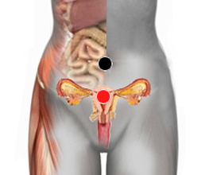

Complejo de electra - "Trini"
Par
ombligo - útero

Generalidades:
Complejo de Electra. Trastorno identificado por el Psicólogo Sigmund Freud. El afecto o líbido de la niña o mujer queda fijado en la figura del padre. Al igual que en el complejo de Edipo, el nombre está inspirado en personajes griegos.